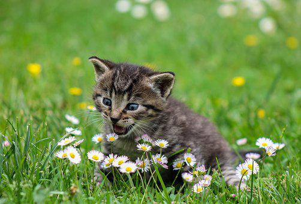

Gatuna Alexandar
Simpática, cariñosa, llegó hace 3 meses a la fundación,la recogieron de la calle.
Gatuno Trepador
Jugetón, esquivo. Nacio en la fundación . Su mamá gatuna esta con él junto con sus herman@s.

Gatuno Saltarin
Es hermano de trepador, él es sociable y le gusta cazar mariposas.

Gatuna Shiela
Huraña, enigmática, tiene que tener un cuidado especial por su pelaje angora.
Gatuno Joanne
Reservado, tranquilo, esterilizado.